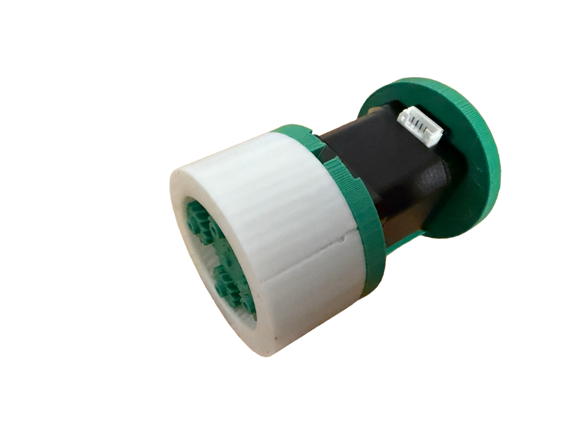
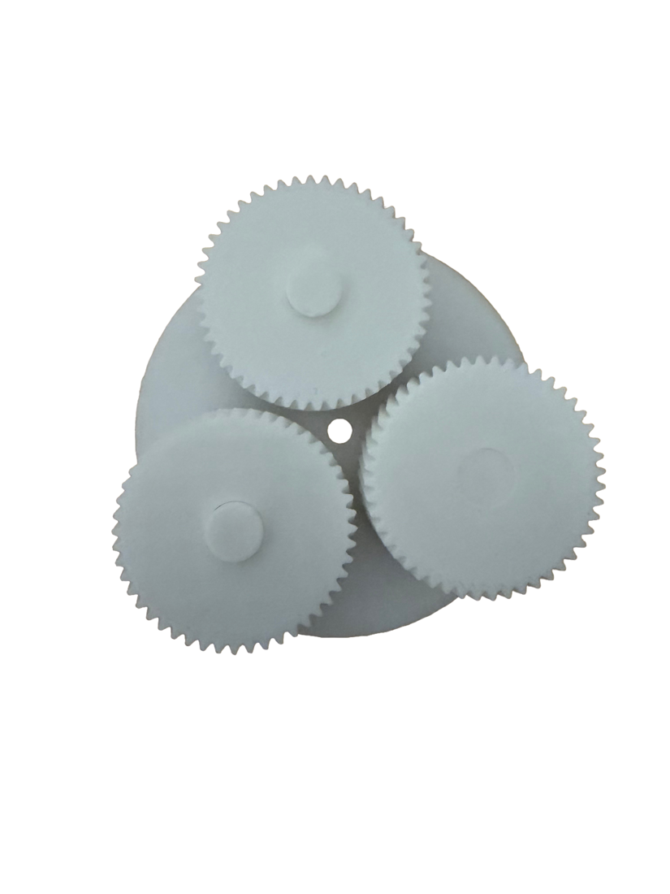
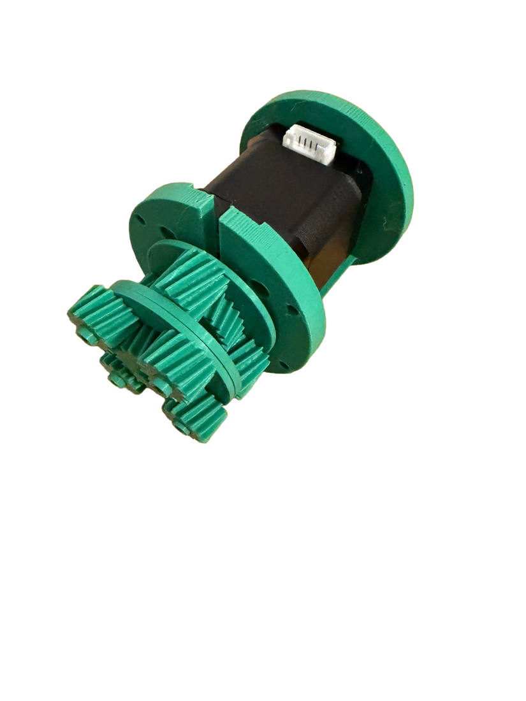
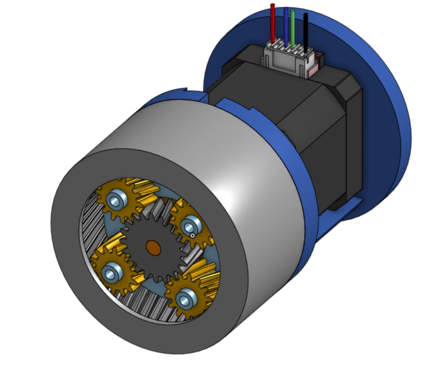
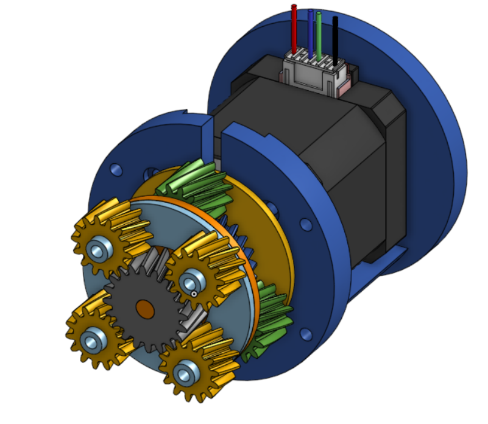

Mechanical design · In progress
Two-Stage Planetary Gearbox
A compact 10.2:1 helical planetary gearbox that gives each joint of my robotic arm the torque it needs, redesigned after my first version came out far too big.

Overview
My robotic arm needs far more torque than a NEMA 17 stepper makes on its own. I designed a two-stage planetary gearbox to multiply it: a 3:1 first stage and a 3.4:1 second stage, for 10.2:1 overall. That takes each joint from 0.55 Nm at the motor to a theoretical 5.6 Nm at the output.
Version 1: what went wrong
I designed the first version with no experience in gearboxes or in what the arm actually needed. It was far too big for a robot arm joint. I also didn’t know how to design for 3D printing, so it had no tolerances and no planned screw holes. It looked like a gearbox, but it wasn’t a usable part.


What I changed
- Two stages, sized from real torque numbers. I learned how multi-stage planetary gearboxes work and calculated the exact torque each joint needs, instead of picking a ratio and hoping. Splitting the reduction across two stages got the torque I needed in a much smaller package.
- Helical gears. Helical teeth are cut at an angle, so each tooth engages gradually along its length instead of all at once like a spur gear. At least one tooth pair is always sharing the load, which makes the gearbox smoother and quieter and lets 3D printed plastic teeth carry more load. The tradeoff is that angled teeth push sideways along the shaft, which the housing has to handle.
- Reverse D cut in the first sun gear. The NEMA 17 shaft has a flat, so I cut a matching reverse D into the first sun gear. The motor drives it directly, with no set screw or glue.
- Heat-set inserts. I modeled pockets in the CAD for brass heat-set inserts, which are melted into the printed plastic to give strong threads that don’t strip like screws driven straight into plastic.
- Ring gear with an inner lip. A small overhang on the ring gear reaches into the center and holds all the stages in place, so no extra parts are needed to keep it together.


Printing and iteration
I print everything on a Prusa FDM printer and slice in PrusaSlicer. I went through many print iterations to get here. The hardest part was tolerances and exact gear sizing: if the clearances were too tight, the gears bound up with friction, and if they were too loose, they didn’t mesh well. I kept adjusting clearances between prints until it ran freely.
What I learned
- Design for the manufacturing method from the start: tolerances, screw holes, and fasteners belong in the first CAD model.
- Calculate the load before choosing the design.
- Printing the part and testing it taught me more than any single CAD revision.